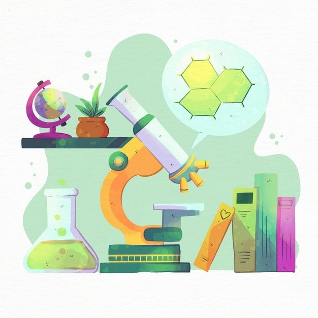

REPÚBLICA BOLIVARIANA DE VENEZUELA
MINISTERIO DEL PODER POPULAR PARA LA EDUCACIÓN
U.E. “ROBERTO CASTILLO CARDIER”
ANACO – ESTADO ANZOÁTEGUI
MAPA GENÉTICO, MUTACIONES Y OTROS MECANISMOS GENÉTICOS

alumna: michelle del valle
3 año secciòn "f" #21
prof: fabianny zacarías
cat: biología
Introducción
El síndrome de Down es una condición natural, no es una enfermedad y, por lo tanto, no requiere ningún tratamiento médico para curarla. Además, al desconocerse las causas de esta alteración genética, resulta imposible prevenirlo. La salud de los niños con síndrome de Down no tiene por qué diferenciarse en nada a la de cualquier otro niño, de esta forma, en muchos de los casos su buena o mala salud no guarda ninguna relación con su discapacidad. Por tanto, podemos tener niños sanos con síndrome de Down, es decir, que no presentan enfermedad alguna. Sin embargo, también hay niños con síndrome de Down que presentan patologías asociadas. Son complicaciones de salud relacionadas con su alteración genética: cardiopatías congénitas, hipertensión pulmonar, problemas auditivos o visuales, enfermedades autoinmunes, anomalías intestinales, neurológicas, endocrinas, mayor prevalencia de enfermedad de Alzheimer.
¿Qué es el Sindrome de Down y porque se produce?
 El síndrome de Down, también conocido como trisomía 21, es una anomalía donde un material genético sobrante provoca retrasos en la forma en que se desarrolla un niño, tanto mental como físicamente.
El síndrome de Down, también conocido como trisomía 21, es una anomalía donde un material genético sobrante provoca retrasos en la forma en que se desarrolla un niño, tanto mental como físicamente.
El síndrome de Down es causado por un error aleatorio en la división de las células que tiene como resultado la presencia de una copia extra del cromosoma 21.
A este tipo de error se le llama no disyunción. Por lo general, cuando una célula se divide en dos, los pares de cromosomas se separan de modo que un cromosoma va para una célula y el otro para la otra célula. En la no disyunción ocurre un error y ambos cromosomas del par van a la misma célula y la otra célula no recibe ningún cromosoma de ese par.
características físicas comunes del síndrome de Down
 Algunas características físicas comunes del síndrome de Down incluyen:
Algunas características físicas comunes del síndrome de Down incluyen:
Cara aplanada, especialmente en el puente nasal,
Ojos en forma almendrada rasgados hacia arriba,
Cuello corto,
Orejas pequeñas,
Lengua que tiende a salirse de la boca,
Manchas blancas diminutas en el iris del ojo (la parte coloreada),
Manos y pies pequeños,
Un solo pliegue en la palma de la mano (pliegue palmar),
Dedos meñiques pequeños y a veces encorvados hacia el pulgar,
Tono muscular débil o ligamentos flojos,
Estatura más baja en la niñez y la adultez.
promedio o expectativa de vida
La esperanza de vida de las personas con síndrome de Down ha aumentado notablemente de los 25 años como media hace 30 años, a situarse en los 60 en la actualidad.
posibilidad de tratamientos
 No existe un tratamiento estándar y único para el síndrome de Down. Los tratamientos dependen de las necesidades físicas e intelectuales de cada individuo, así como de sus destrezas y limitaciones personales. Las personas con síndrome de Down pueden recibir los cuidados adecuados en su casa e integrados a la comunidad.
No existe un tratamiento estándar y único para el síndrome de Down. Los tratamientos dependen de las necesidades físicas e intelectuales de cada individuo, así como de sus destrezas y limitaciones personales. Las personas con síndrome de Down pueden recibir los cuidados adecuados en su casa e integrados a la comunidad.
determinación del síndrome
El Síndrome de Down se debe a la trisomía del cromosoma 21 (presencia de un cromosoma 21 extra) es decir, a un cariotipo correspondiente a 47,XX,+21 o 47,XY,+21. (El cariotipo normal de una mujer es 46,XX y el de un hombre es 46, XY).
conclusión
El síndrome de Down no es una enfermedad. Tampoco existen grados de síndrome de Down, pero el efecto que la presencia de esta alteración produce en cada persona es muy variable. Las personas con síndrome de Down muestran algunas características comunes pero cada individuo es singular, con una apariencia, personalidad y habilidades únicas.
Entender, apoyar y actuar son solo algunas de las claves para ayudar en la crianza del nuevo miembro de la familia. Entender, apoyar y actuar son solo algunas de las claves. El nacimiento de un niño con síndrome de Down hace que la familia atraviese por un periodo de mucho estrés, del cual no están libres los abuelos.
Esta página web escrita en código HTML y CSS le pertenece a su creadora MICHELLE DEL VALLE #21